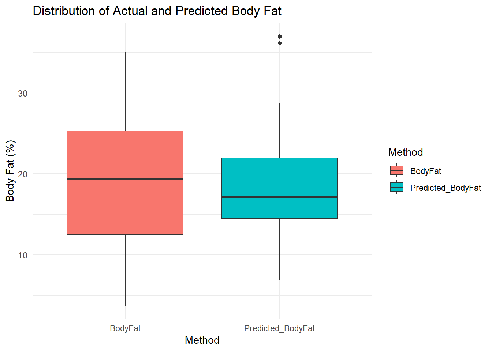
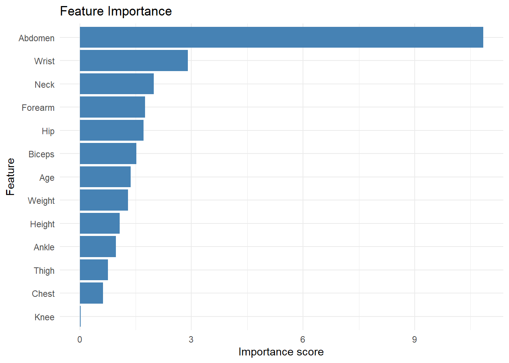
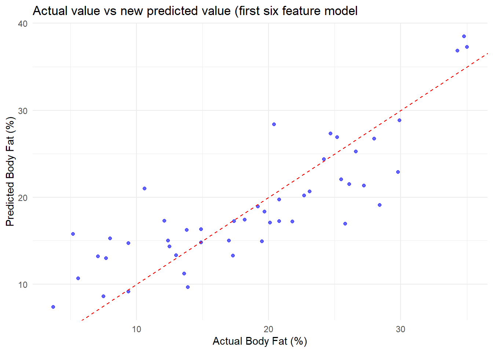

Density BodyFat Age Weight
Min. :0.995 Min. : 0.00 Min. :22.00 Min. :118.5
1st Qu.:1.041 1st Qu.:12.47 1st Qu.:35.75 1st Qu.:159.0
Median :1.055 Median :19.20 Median :43.00 Median :176.5
Mean :1.056 Mean :19.15 Mean :44.88 Mean :178.9
3rd Qu.:1.070 3rd Qu.:25.30 3rd Qu.:54.00 3rd Qu.:197.0
Max. :1.109 Max. :47.50 Max. :81.00 Max. :363.1
Height Neck Chest Abdomen
Min. :29.50 Min. :31.10 Min. : 79.30 Min. : 69.40
1st Qu.:68.25 1st Qu.:36.40 1st Qu.: 94.35 1st Qu.: 84.58
Median :70.00 Median :38.00 Median : 99.65 Median : 90.95
Mean :70.15 Mean :37.99 Mean :100.82 Mean : 92.56
3rd Qu.:72.25 3rd Qu.:39.42 3rd Qu.:105.38 3rd Qu.: 99.33
Max. :77.75 Max. :51.20 Max. :136.20 Max. :148.10
Hip Thigh Knee Ankle Biceps
Min. : 85.0 Min. :47.20 Min. :33.00 Min. :19.1 Min. :24.80
1st Qu.: 95.5 1st Qu.:56.00 1st Qu.:36.98 1st Qu.:22.0 1st Qu.:30.20
Median : 99.3 Median :59.00 Median :38.50 Median :22.8 Median :32.05
Mean : 99.9 Mean :59.41 Mean :38.59 Mean :23.1 Mean :32.27
3rd Qu.:103.5 3rd Qu.:62.35 3rd Qu.:39.92 3rd Qu.:24.0 3rd Qu.:34.33
Max. :147.7 Max. :87.30 Max. :49.10 Max. :33.9 Max. :45.00
Forearm Wrist
Min. :21.00 Min. :15.80
1st Qu.:27.30 1st Qu.:17.60
Median :28.70 Median :18.30
Mean :28.66 Mean :18.23
3rd Qu.:30.00 3rd Qu.:18.80
Max. :34.90 Max. :21.40
# Data cleaning# Filter unreasonable body fat percentage, height and weightbody_fat_data <- body_fat_data %>%filter(BodyFat >=0& Height >0& Weight >0)
Column Name
Description
Density
Body density, a key metric used in the Siri formula to calculate body fat percentage.
BodyFat
The actual measured body fat percentage calculated using the “Siri Equation”.
Age
Age of the subject (in years).
Weight
Weight of the subject (in pounds).
Height
Height of the subject (in inches).
Neck
Neck circumference (in centimeters).
Chest
Chest circumference (in centimeters).
Abdomen
Abdomen circumference (in centimeters), strongly correlated with body fat percentage.
Hip
Hip circumference (in centimeters).
Thigh
Thigh circumference (in centimeters).
Knee
Knee circumference (in centimeters).
Ankle
Ankle circumference (in centimeters).
Biceps
Biceps circumference (in centimeters), measured in a relaxed state.
Forearm
Forearm circumference (in centimeters).
Wrist
Wrist circumference (in centimeters).
Body density calculation formula:
the body consists of two components - lean body tissue and fat tissue. Letting:
D = Body Density (gm/cm^3)
A = proportion of lean body tissue
B = proportion of fat tissue
A + B = 1
a = density of lean body tissue (gm/cm^3) = 1.10 gm/cm^3
b = density of fat tissue (gm/cm^3) = 0.90 gm/cm^3
D = 1/[(A/a) + (B/b)]
The above equation shows that the body density calculation formula of human body is:
By combining these two formulas, we can accurately get the body fat percentage of the human body.
However, in daily life, we cannot easily know the proportion of fat tissue of an individual. Therefore, I try to predict the body fat percentage of an individual through the body’s physical index data, such as (weight, height, waist circumference and other easily measurable indicators).
Construct a multiple regression model to predict the body fat percentage of adult men and conduct predictive analysis.
# The data is divided into training set and test setset.seed(123)train_index <-createDataPartition(body_fat_data$BodyFat, p =0.8, list =FALSE)train_data <- body_fat_data[train_index, ]test_data <- body_fat_data[-train_index, ]# Build a multiple linear regression modelmodel <-lm(BodyFat ~ Age + Weight + Height + Neck + Chest + Abdomen + Hip + Thigh + Knee + Ankle + Biceps + Forearm + Wrist, data = train_data)# Show Model Summarysummary(model)
# Scatter plot for Actual vs Predictedggplot(test_data, aes(x = BodyFat, y = Predicted_BodyFat)) +geom_point(color ="blue", alpha =0.6) +geom_abline(slope =1, intercept =0, color ="red", linetype ="dashed") +labs(title ="Actual vs Predicted Body Fat",x ="Actual Body Fat (%)",y ="Predicted Body Fat (%)") +theme_minimal()
# Reshape data for box plotcomparison <- test_data %>%select(BodyFat, Predicted_BodyFat) %>%pivot_longer(cols =c(BodyFat, Predicted_BodyFat),names_to ="Method",values_to ="BodyFat")# Box plot comparisonggplot(comparison, aes(x = Method, y = BodyFat, fill = Method)) +geom_boxplot() +labs(title ="Distribution of Actual and Predicted Body Fat",x ="Method",y ="Body Fat (%)") +theme_minimal()

The data or visual analysis reports show that there are differences in the predictions.
Thinking: Not all body indicators in the data set are related to body fat percentage. Calculate the impact of body indicators on body fat percentage.
# Calculate the impact of important characteristics on body fat percentageimportance <-varImp(model, scale =FALSE)# Display feature importanceimportance %>%as.data.frame() %>%rownames_to_column("Feature") %>%ggplot(aes(x =reorder(Feature, Overall), y = Overall)) +geom_bar(stat ="identity", fill ="steelblue") +coord_flip() +labs(title ="Feature Importance", x ="Feature", y ="Importance score") +theme_minimal()

Abdomen, chest, neck, forearm, hip and biceps are the most influential in predicting body fat percentage.
Use these 6 body indicators to build a multiple linear regression model
# Extract the top six features with the highest importance scorestop_features <-c("Abdomen", "Wrist", "Neck", "Forearm", "Hip", "Biceps")# Build a new modelnew_model <-lm(BodyFat ~ Abdomen + Wrist + Neck + Forearm + Hip + Biceps, data = train_data)# Show new model summarysummary(new_model)
Call:
lm(formula = BodyFat ~ Abdomen + Wrist + Neck + Forearm + Hip +
Biceps, data = train_data)
Residuals:
Min 1Q Median 3Q Max
-9.2667 -3.1079 -0.4602 2.9265 11.0899
Coefficients:
Estimate Std. Error t value Pr(>|t|)
(Intercept) 13.27239 7.46391 1.778 0.076912 .
Abdomen 1.02298 0.06099 16.773 < 2e-16 ***
Wrist -1.85079 0.52519 -3.524 0.000528 ***
Neck -0.70250 0.23913 -2.938 0.003701 **
Forearm 0.25447 0.20616 1.234 0.218545
Hip -0.42451 0.09510 -4.464 1.35e-05 ***
Biceps 0.21006 0.17402 1.207 0.228835
---
Signif. codes: 0 '***' 0.001 '**' 0.01 '*' 0.05 '.' 0.1 ' ' 1
Residual standard error: 4.386 on 197 degrees of freedom
Multiple R-squared: 0.7358, Adjusted R-squared: 0.7277
F-statistic: 91.43 on 6 and 197 DF, p-value: < 2.2e-16
# Make predictions on the test settest_data$Predicted_BodyFat_New <-predict(new_model, newdata = test_data)
# Scatter plot: actual values vs new predicted valuesggplot(test_data, aes(x = BodyFat, y = Predicted_BodyFat_New)) +geom_point(color ="blue", alpha =0.6) +geom_abline(slope =1, intercept =0, color ="red", linetype ="dashed") +labs(title ="Actual value vs new predicted value (first six feature model",x ="Actual Body Fat (%)",y ="Predicted Body Fat (%)") +theme_minimal()

# Box plot: Comparison of actual value and new predicted value distributioncomparison_new <- test_data %>%select(BodyFat, Predicted_BodyFat_New) %>%pivot_longer(cols =c(BodyFat, Predicted_BodyFat_New),names_to ="Method",values_to ="BodyFat")ggplot(comparison_new, aes(x = Method, y = BodyFat, fill = Method)) +geom_boxplot() +labs(title ="Distribution of Actual and Predicted Body Fat",x ="method",y ="Body fat (%)") +theme_minimal()
Compare the MSE and MAE of the two comparative analyses. The second prediction has a higher error. Therefore, the conclusion is that the second analysis method failed. More analysis directions are needed in the future to determine how to accurately analyze body fat percentage with the same body indicators.